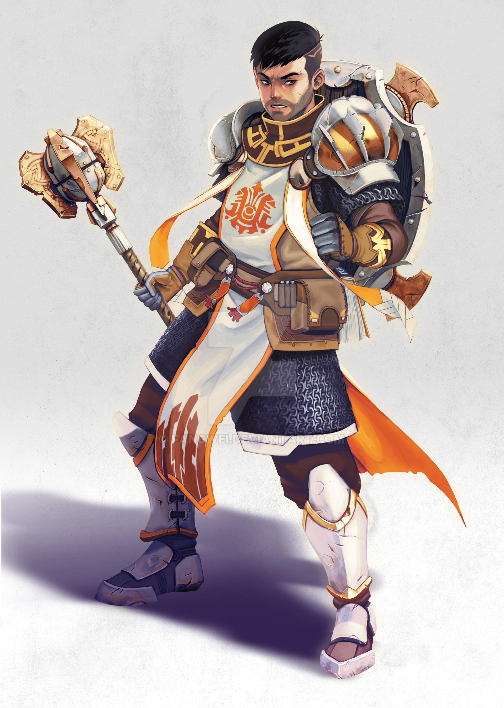
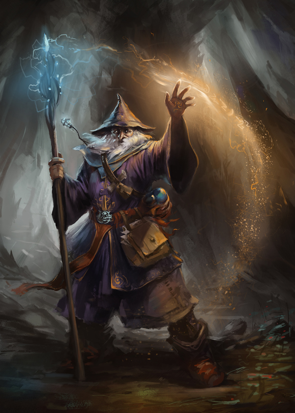

Step 2 will be picking your character’s class. A class is a person’s skill, what they trained to become.
At level one you will pick a class for your character. Think of it like a major or an occupation.
Level one gives you some base features which include the following.
Hit points, this is how much
damage your character can take before fainting. Depending on your class you will have a certain amount
plus your constitution modifier (which will be talked about more in step 3).
Proficiencies are given based
on the class you choose. These include armor, weapons, tools, saves, and skills.
Equipment is also given;
step 5 will talk more about this.
Abilities, which will be given to you as you level up, level one included.
The Bard is a versatile and charismatic class that blends magic, music and storytelling. Bards are known for their ability to inspire allies, manipulate foes, and weave spells through their performances.
The Cleric is a powerful and versatile class that combines divine magic with combat prowess. Clerics are devoted to a deity or divine force and act as their mortal agents, drawing on divine power to protect, heal, and smite enemies.
The Wizard is the quintessential spellcaster, revered for their mastery of arcane magic and their vast repertoire of spells. If you're drawn to the idea of manipulating the fabric of reality, wizards are your go-to class.